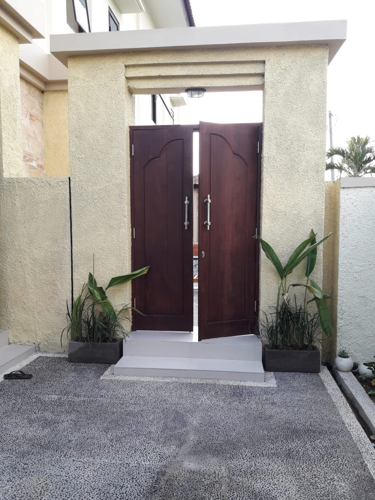

Our pool is setup with healthy saltwater system. It doesn't require harsh chemicals or much chlorine. The water will be gentler on your skin, eyes and hair, and it will not fade swimwear!
The size is 8m long 3m wide and 140cm deep. Should be enough to have a swim and at the same time even a short adult can reach the floor and stand.
Наш Бассейн оборудован системой соленой воды и не требует большого количества хлора и других химикатов. Вода будет мягче для кожи, глаз и волос, а купальники от них не полиняют!
Размер бассейна 8м х 3м и 140см в глубину. Должно быть достаточно, чтобы поплавать, и в то же время даже невысокий взрослый может достичь пола и встать.
